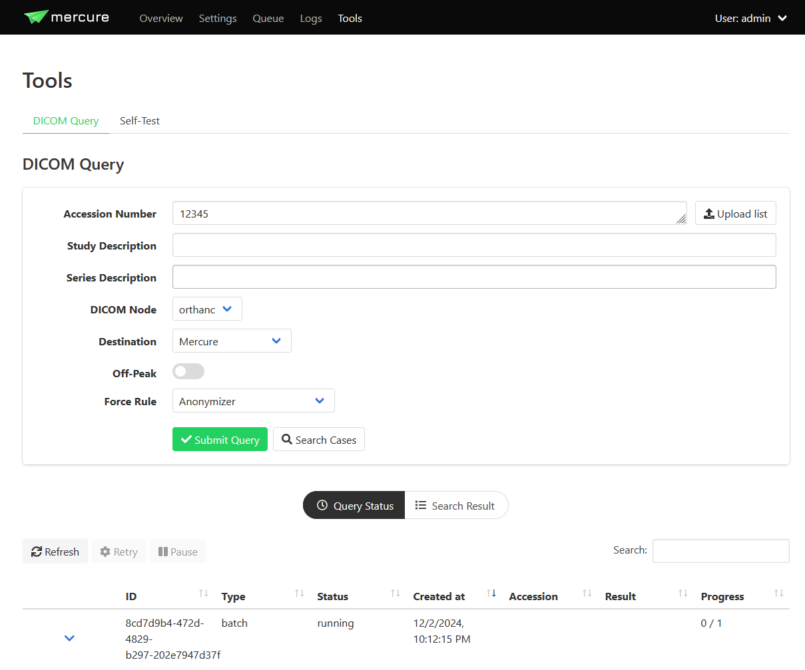

Query Tool
The DICOM Query tool enables pulling series and studies from DICOM and DICOMweb (WADO) servers. It is an alternative to the standard “push” workflow that the mercure Receiver enables.
{kind=link}
To query a node, you must have at least one target with capability set to “Pull” or “Both.” Other targets will not appear in the dropdown list.
A query requires one or multiple accession numbers to start with, separated by commas. mercure will attempt to query every study that has that one of the listed accessions. Unless otherwise specified, mercure will pull every DICOM from every series attached to those studies.
The Upload List button lets you pick a text file from your computer to use as a source of accession numbers, either comma or newline separated.
Filtering by Study Description
The “Study Description” entry can be a comma-delimited list of exact Study Descriptions which will be used to filter the query results. mercure will retrieve any studies (with the given accession numbers) that match any of the given Study Descriptions.
Filtering by Series Description
Similarly, the “Series Description” entry can be a comma-delimited list of exact Series Descriptions, and again mercure will retrieve only the series that correspond to one of these.
The “Mercure” Destination
When selecting the Destination “Mercure”, the retrieved DICOMs will be injected into the mercure pipeline, allowing the retrieved series to be processed and/or dispatched to other targets.
By default, the DICOMs injected by the DICOM Query tool are evaluated as if they were received by the mercure receiver. Thus, the series will be processed according to the rules for which the filter conditions are met.
Setting the “Force Rule” option will tell mercure to ignore the rule filter criteria and force it to treat these DICOMs as if they had only triggered the given rule. Even if these DICOMs would not have triggered this rule, and even if other rules would have triggered, only the “Force Rule” rule will run.
Other Destinations
Instead of injecting the retrieved DICOMs into the mercure pipeline, the DICOMs can also be directly stored in folders. To do this, folder targets need to be created via the “Settings > Targets” page. The folder targets will then appear in the destination dropdown list of the DICOM Query tool.
Off-Peak Processing
Selecting the “Off-Peak” option will restrict queries from running during peak working hours. It will automatically pause a running query when peak hours begin, and continue when peak hours end.